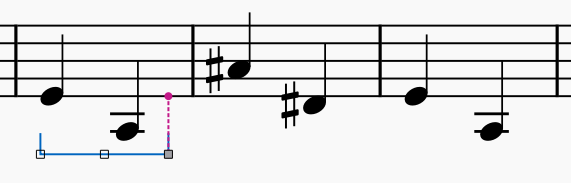
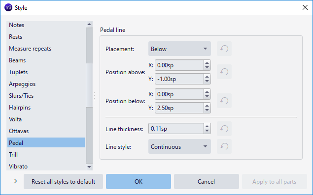

Pedal
For Harp Pedal see Idiomatic notation: Harp instead.
Types of pedal markings
This chapter focuses on the types of piano pedal engraving available, for knowledge of various piano pedals see wikipedia article.
In terms of visual representation
Supported engravings including:
- Line at either or both ends, have no hook or hooks at angles of either 45 or 90 degrees, or "T" end;
- Ped. followed by such a line, or a rosette symbol (*): The line from the built-in Ped. * palette item is invisible and non-printing. Adjust on-screen display with View menu > Show > Show invisible setting accordingly, see The user interface. To convert the line to visible in printing, or style it as dashed, see properties.\

- Other related symbols and pictogram can be found under Symbols category in Master palette window, see Other symbols. Sost. (sostenuto pedal) marking should not be confused with sost.-- Tempo markings, see also discussion on steinberg.net.\

- Create custom sim. or pedal ad lib marking with Staff text.
- Full pedal is implied for playback, embed images to add pedal strength symbols for engraving need.
In terms of function inside MuseScore
There are three different subtypes:
Type 1 includes:\

- Line with 45 degree angled End hook or no End hook, with or without Ped. beginning text.
- Ped. followed by a rosette symbol (*)
Visually, the line or symbol only extends horizontally to the notehead attached to the end anchor.\ Functionally, if that note is attached to another marking's start anchor, the following marking will automatically connect and make a shape resembling "-^-", which is indicative of the piano technique "pedal released and pressed again without releasing this note".\

\ _shown above is the auto connect, their playback are also in line with the piano technique_\ If the instrument use [SoundFonts](../../sound-and-playback/soundfonts.md) such as "MS Basic", or when exported as MIDI file, sustain (MIDI CC 64) is created. When consecutive type 1 markings create a "-^-", playback matches the piano technique, the _first marking_ is interpreted by synthesizer as _released **at** the note attached to the **end anchor**_. Single or trailing type 1 markings creates playback like type 2: _sustain until the note attached to the **end anchor** ends._\

\ _The last two type 1 markings shown above are single or trailing, they create the same playback as type 2_
Type 2 includes:\

- Line other than described in Type 1, with or without Ped. beginning text.
Visually, the line extends horizontally to an aprpopiate length spanning the full duration of note attached to the end anchor.\ Functionally, if the instrument use SoundFonts such as "MS Basic", or when exported as MIDI file, sustain (MIDI CC 64) is created. Type 2 always sustain until the note attached to the end anchor ends.
Type 1 and 2 are interchangable by adjusting properties.
Type 3 includes the sostenuto pedal marking and custom Staff texts, they are for engraving purpose only and are non-functional.
Adding pedal markings to your score

\ _shown above a type 2 marking on score_
Add pedal markings from Lines palette, see Other lines:Adding a line to your score.
Adjust with Shift+Left/Right, switch handle with Tab, see Adjusting elements directly: Changing the range of a line.
Unfortunately, you might need to make compromise with engraving style or not notate at all if you must create a desired playback, because of the functional limitation of Type 1 and Type 2 explained. As of Musescore 4.1.1, pedal marking always create sustain playback only (cannot be turned off), making it impossible to use "add redundant symbol, make it invisible" trick.
To create shape resembling "-^-" with consecutive Type 1 markings, make sure the end anchor is attached correctly, which is usually to the first note of the next measure instead of the last note of the previous measure. This big picture shows the correct end anchor result.\

MuseScore 4.1.1 does not offer keyboard shortcut bindings to palette items, the keyboard shortcut key available in Musescore 3 that you can use to re-apply the same (last used) palette item is removed (not reimplemented yet).
Creating pedal changes
Not to be confused with Harp pedal change
Use type 1 markings, explained in "adding marking" section.\ For issues related to MusicXML direction import / export, there are upcoming changes in Musescore 4.2, see forum discussion https://musescore.org/en/node/356899 [please feel free to update info here]
Pedal properties
Select pedal marking(s), in Properties panel Pedal section, Line properties can be set, the extra option available to pedal marking is "Show line with rosette" checkbox under Style tab, tick it to make the default line visible in printing and exporting.

Pedal style
Values of the "Style for Pedal" can be edited in Format→Style→Pedal.\ Values of the "Style for text inside Pedal" can be edited in Format→Style→Text styles→Pedal\ See also Line style.
